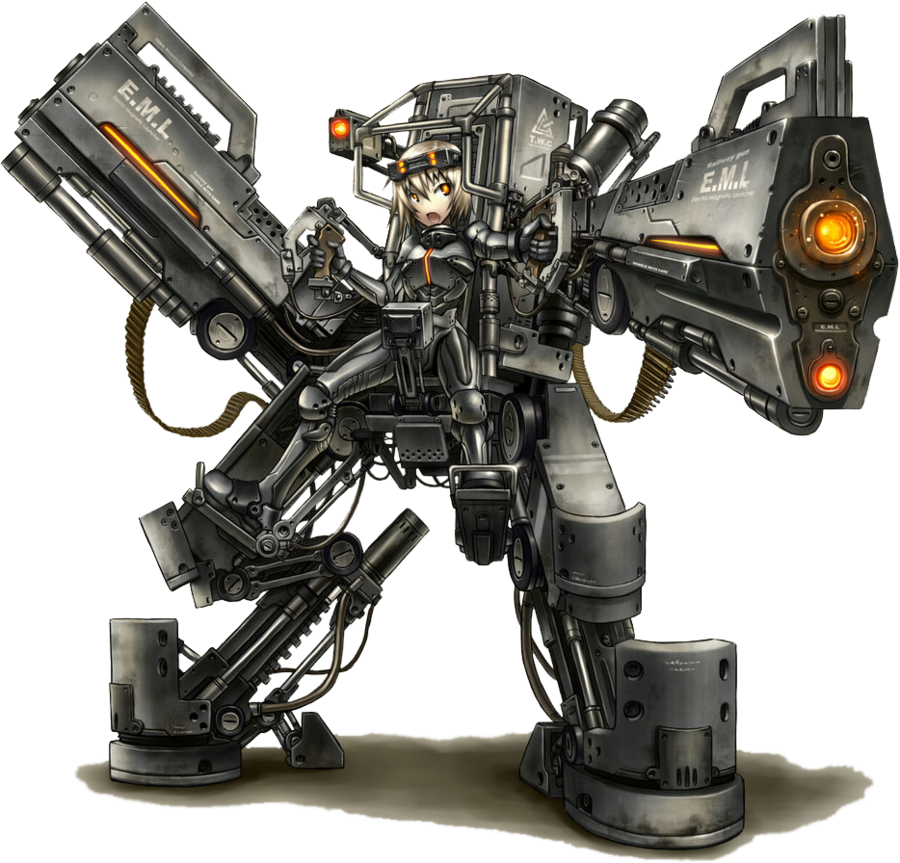

.svg)
Top AI Ethical Dilemmas
Unemployment: As we enjoy the advantages that come with AI. Let’s not forget one of the major disadvantages which is creation of unemployment. As we invent ways to automate jobs, we should also invent ways to create more jobs for humans so that the economy will be balanced. Imagine what will happen when robots take over the whole workforce, what will then be the faith of humans?
Privacy and Surveillance: The use of artificial intelligence has limited people’s right to privacy as there are many spywares online that can be used to spy on people’s privacy without their consent. Governments make use of AI surveillance and facial recognitions to run their intelligence agency and this infringes on people’s privacy right.
Security: In this period when countries are building nuclear weapons of mass destruction, how do we regulate what is out there. We need to invest more on cyber security and regulations that will regulate hackers, and use of weapons of mass destruction so as to save and preserve mankind. This is because the fight is against systems that are proving to be smarter, and more capable than us by orders of magnitude.
